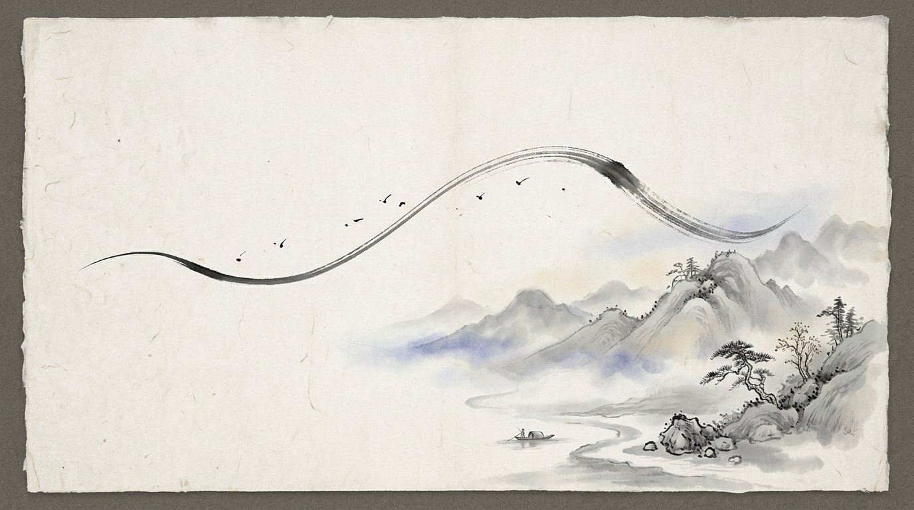

觸控白板上的視覺化樂器・筆有濃淡・畫有留白・眾人共繪一卷・其聲自和
畫一條線聽見一段旋律

特色
不需樂理基礎・畫出來的都好聽
壹
筆勢即奏法
輕點是短音，拖曳是旋律線；快筆濃、慢筆淡，抖動成顫音，畫圈成琶音。一支筆，五種聲音的表情。
貳
色彩即音色
濃墨鐘琴、赭石木琴、胭脂撥弦、花青笛聲、紫灰星光。分組認領顏色共繪，一張畫便是一首合奏。
參
水墨的美學
宣紙紋理、墨色暈染、飛白筆觸。全班數十筆疊上，畫面始終是一幅畫，聲音始終和諧。
肆
鼓聲為底
心跳、散步、進行曲、雨滴、慶典。五組節奏伴奏，讓集體創作自然對齊拍子。
伍
為教學而生
十二調、六種音階；音名、唱名、簡譜三種顯示。音階鎖定，畫布上不存在錯的音。
陸
作品帶得走
為作品題名，一鍵錄影。畫面與演奏一同輸出成影片，成果發表、與家長分享都方便。
怎麼玩
三步驟・共創一幅會唱歌的畫其一選色
調色盤上每種顏色是一種樂器。分組認領顏色，便是認領一個聲部。
其二作畫
高處是高音，低處是低音。畫山是旋律起伏，畫雨是輕快短音，畫圈是流動琶音。
其三聆聽
掃描光自左而右掃過畫卷，每一筆都被讀成音樂。題名、錄影，作品就完成了。
關於我
Dato.
音樂・教育・創作——
讓每個孩子都能畫出自己的聲音。